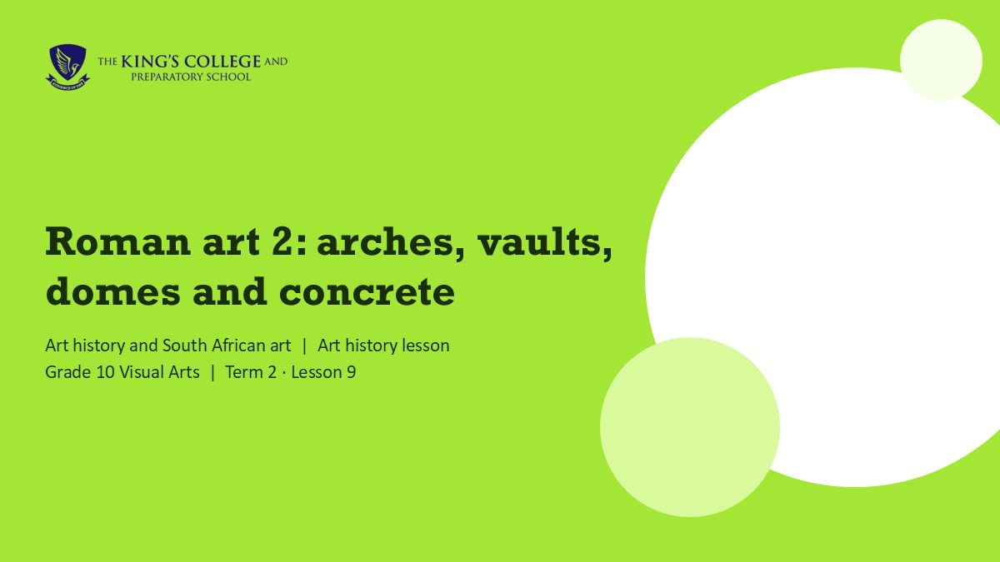

Term 2 · Lesson 9 · Art history lesson
Roman Art 2: Arches, Vaults, Domes and Concrete
Start Here
Today I Will
- Share a present-day example of a propaganda strategy
- Explain how the arch, vault and dome work
- Explain why concrete changed Roman building
Share your propaganda strategy and your South African example. Which strategy did the class find most often today?
Words to Know
| Word | Meaning |
|---|---|
| Round arch | A semicircular arch of wedge-shaped stones (voussoirs) locked by a keystone, carrying weight to its supports. |
| Barrel vault | A tunnel-shaped ceiling made by extending a round arch in depth. |
| Groin vault | A vault formed where two barrel vaults cross at right angles, carrying weight to four corners. |
| Dome | A hemispherical roof made by rotating an arch around a central point. |
| Concrete | A Roman building material of lime, water, rubble and volcanic ash (pozzolana) that sets very hard. |
Slides

Videos
Notes
Learners share their propaganda examples (10 min); Roman engineering: the round arch, barrel and groin vaults, the dome and concrete.
From Lintel to Dome
- Post and lintel: The Greek system: a beam across two posts. Stone beams crack if too long, so spaces stay narrow.
- Round arch: Voussoirs and a keystone push the load outwards and downwards, so arches span much wider openings.
- Barrel vault: An arch extended in depth makes a tunnel-like ceiling, used in the Colosseum corridors.
- Groin vault: Two barrel vaults crossing concentrate weight on four corners and let light in from the sides.
- Dome: An arch rotated in a circle covers a large round space, as in the Pantheon.
Why Concrete Mattered
- Strong: Pozzolana, a volcanic ash from near Naples, made concrete set very hard, even under water.
- Shapeable: It could be poured into wooden moulds of any shape, making curved walls, vaults and domes possible.
- Fast and cheap: Rubble and less-skilled labour replaced carefully cut stone blocks.
- Finished with a face: Concrete walls were often covered in brick or marble, so they still looked rich.
- Interior space: For the first time, architecture could be designed around huge open interiors, not only beautiful outsides.
Arch, vault, dome and concrete gave Rome the power to shape space itself.
Practical
You need: Diagram sheet, History booklet, VJ, pencils
Label It, Explain It
- Label the post and lintel, round arch, barrel vault, groin vault and dome on the diagram sheet.
- On the arch, also label the voussoirs and the keystone, and draw arrows to show how the weight travels.
- Next to each structure, write one Roman building that uses it.
- Choose one building, for example the Pont du Gard, and describe how its arches create rhythm.
- In three or four sentences, explain why concrete changed building. Use the words pozzolana, moulds and interior space.
Test Yourself
- Identify the stone that locks a round arch in place.
- Explain the difference between a barrel vault and a groin vault.
- Give two reasons why concrete changed Roman architecture.
Show answers
1. The keystone. 2. A barrel vault is a continuous tunnel of arch; a groin vault is two barrel vaults crossing, which puts the weight on four corners and opens the sides. 3. Any two: it was strong (pozzolana), could be moulded into curves, was cheaper and faster, and allowed large interiors.
Finished Early?
Show how a Roman arch carries weight.
- Draw a round arch of seven voussoirs with a keystone at the top.
- Label the keystone and the voussoirs.
- Add arrows showing the weight travelling outwards and down into the supports.
- Beside it, draw a tiny post and lintel and write one sentence on why the arch spans wider.